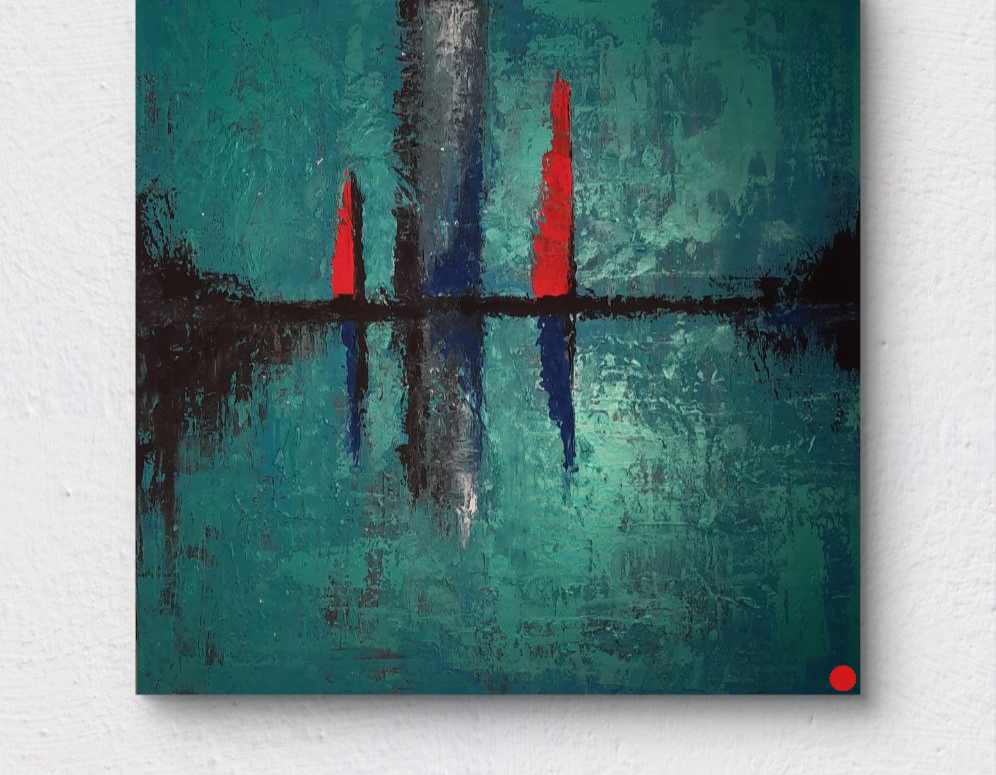
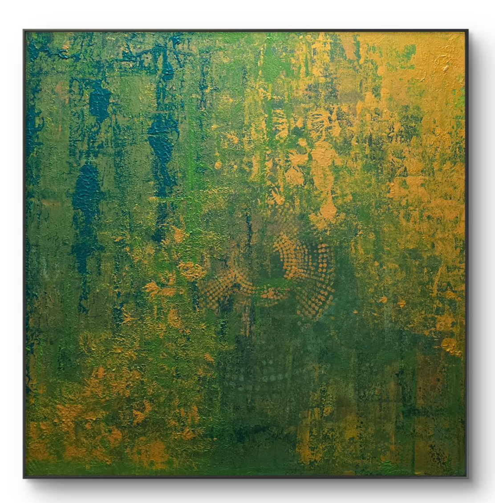

Über mich
Kunst als Ausdruck
Kunst als Ausdruck
des Moments
Willkommen bei Color Art Munich — ein Ort, an dem Farbe zur Sprache wird. Meine abstrakten Acrylbilder entstehen in München und tragen die Energie, Stimmungen und Impulse des Augenblicks in sich.
Jedes Werk beginnt ohne festgelegten Plan. Farben fließen, überlagern sich, reagieren aufeinander — und irgendwann entsteht etwas, das eine eigene Wahrheit trägt. Das ist der Moment, auf den ich male.
Abstrakte Kunst lädt ein zum eigenen Sehen. Was sehen Sie? Energie, Ruhe, Chaos, Harmonie? Das liegt bei Ihnen — das ist der Dialog, der mich fasziniert.
München · Acryl auf Leinwand · Unikate
© 2024 Color Art
100%
Handgemacht
Unikat
Jedes Bild ein Original
München
Entstehungsort